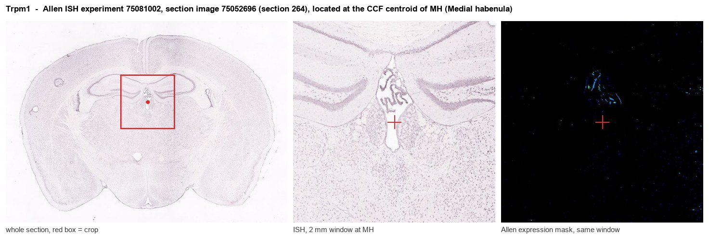
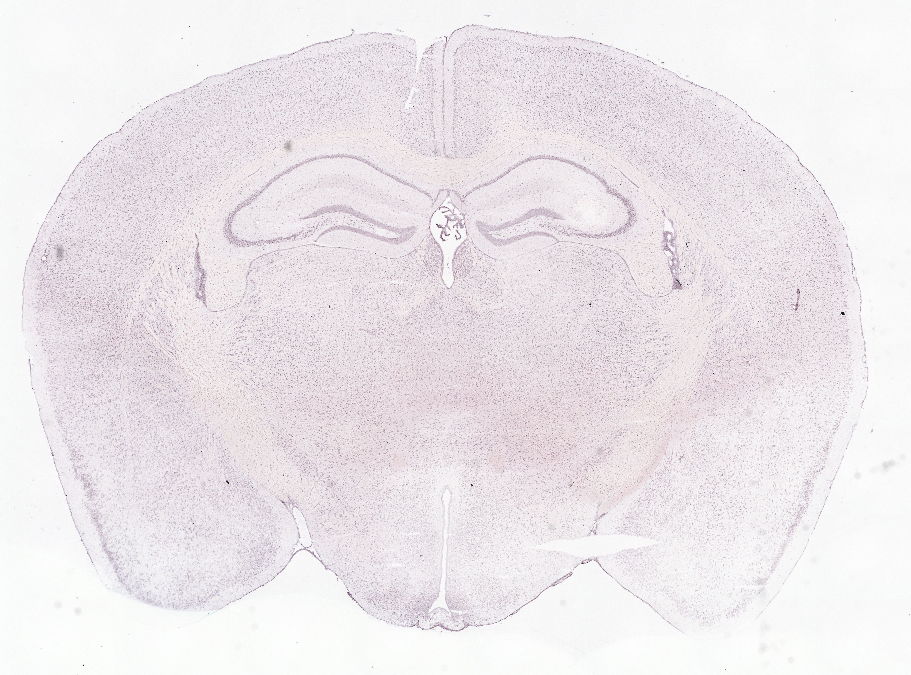
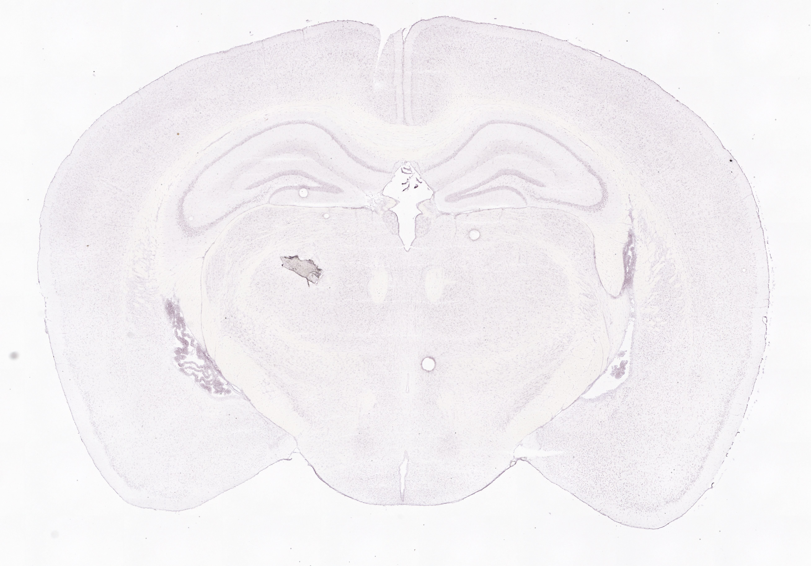
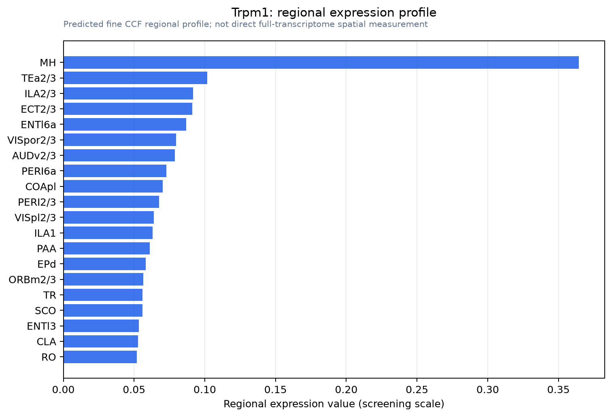

Trpm1
Transient receptor potential cation channel subfamily M member 1 (Long transient receptor potential channel 1) (LTrpC1) (Melastatin-1)
Spatial tier: STRICT_EXCLUSIVE · Class: ION_CHANNEL · Top region: MH (Medial habenula) · Positive regions: 2/554
Function in MH: evidence, prediction, innovation
- Gene function
- Trpm1 (melastatin-1) encodes a calcium-permeable non-selective TRPM cation channel. In retinal ON-bipolar cells it is the mGluR6/Go effector: glutamate keeps it shut in darkness, light-evoked mGluR6 relief opens it, and recessive TRPM1 mutations cause complete congenital stationary night blindness. It also influences melanocyte melanin content.
- Region function
- The medial habenula relays septal and limbic drive to the interpeduncular nucleus, regulating anxiety, fear, nicotine aversion/withdrawal and intrinsic reinforcement.
- Published in this region
- inferred No region-specific literature found (PubMed for Trpm1 with habenula returns zero records). Closest: Trpm1-null mice show hyperactivity, reduced anxiety-like behaviour, altered social interaction and attenuated fear memory beyond what retinal blindness explains (Hori et al. 2021), implying a CNS site of action for a gene in the 15q13.3 microdeletion interval.
- Predicted function
- Prediction: TRPM1 may form a constitutively active or G-protein-gated cation conductance in MHb neurons, setting resting depolarisation and their tonic firing. Loss would reduce MHb-IPN tone, giving the low-anxiety, hyperactive, weakened-fear phenotype of global knockouts. The decisive test is conditional MHb deletion plus slice recordings of resting conductance in Trpm1-/- MHb neurons.
- Innovation
- ★★★★★ 5/5 TRPM1 is treated as retina-only with nothing published in habenula, yet a relevant knockout and MHb tools exist.
- Tools
- Trpm1-null mice for behavioural phenotyping; anti-TRPM1 antibodies, including melanoma-associated retinopathy autoantibodies; no selective agonist or antagonist, so conditional alleles plus MHb Cre drivers (Tac1-Cre, Tac2-Cre, Chat-Cre) are the route.
- References
Direct evidence located at the region

Allen ISH experiment 75081002, section image 75052696 (section 264): the section that contains the CCF centroid of Medial habenula according to the Allen image-to-atlas alignment (reference_to_image), with a 2 mm window around that point. Left: whole section, red box = window. Middle: ISH signal. Right: Allen's expression-mask view of the same window. open this image in the Allen viewer
Direct spatial evidence



Regional expression figure

Predicted WMB × fine-CCF profile; not direct full-transcriptome spatial measurement.
Spatial profile
Evidence and specificity
- Evidence status
- PREDICTED_FINE
- Direct sources
- None; predicted localization only
- Exclusive threshold
- 12 positive regions out of 554
- Spatial specificity
- 0.329
- Top-region fraction
- 0.143
- Filter status
- PASS
Interpretation limits
- Cell-type-to-region projection is imputed expression, not direct spatial measurement.
- Adult reference atlases do not establish stability across age, sex, strain, state, or disease.
- Transcript abundance does not guarantee protein abundance or genetic-tool performance.